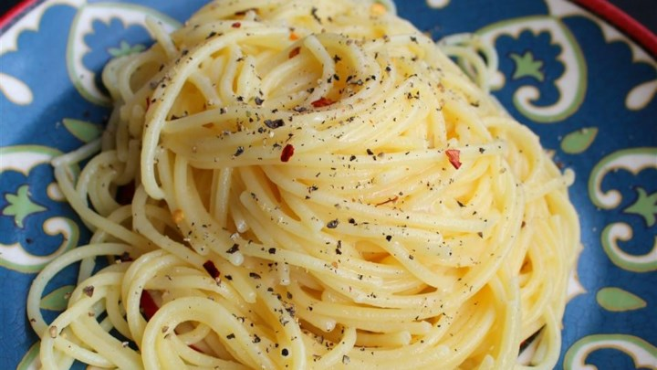

Tomato-Cream Sauce for Pasta

Ingredients:
- 3/4 teaspoon white sugar
- 1 tablespoon dried basil leaves
- 1 (14.5 ounce) can Italian-style diced tomatoes, undrained
- 1 clove garlic, minced
- 1 onion, diced
- 2 tablespoons olive oil
- 1 tablespoon butter
- 1/2 cup heavy cream
- 1/8 teaspoon ground black pepper
- 1/4 teaspoon salt
- 1/4 teaspoon dried oregano
Instructions:
- In a saucepan, saute onion and garlic in olive oil over medium heat. Make sure it doesn't burn. Add tomatoes, basil, sugar, oregano, salt and pepper. Bring to boil and continue to boil 5 minutes or until most of the liquid evaporates. Remove from heat; stir in whipping cream and butter. Reduce heat and simmer 5 more minutes.
Spaghetti Cacio e Pepe
Ingredients:
- 1 pound spaghetti
- 6 tablespoons olive oil
- 2 cloves garlic, minced
- 2 teaspoons ground black pepper
- 1 3/4 cups grated Pecorino Romano cheese
Instructions:
- Bring a large pot of lightly salted water to a boil. Cook spaghetti in the boiling water, stirring occasionally until tender yet firm to the bite, about 10 minutes. Scoop out some of the cooking water and reserve. Drain spaghetti.
- Heat oil in a large skillet over medium heat. Add garlic and pepper; cook and stir until fragrant, 1 to 2 minutes. Add spaghetti and Pecorino Romano cheese. Ladle in 1/2 cup of reserved cooking water; stir until cheese is melted, about 1 minute. Add more cooking water until sauce coats spaghetti, about 1 minute more.